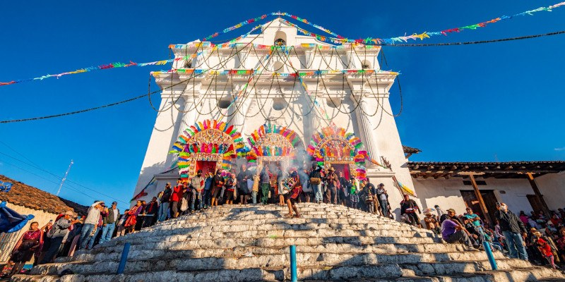

PAQUETES DE VIAJE
“Cada rincón de Guatemala tiene una historia que contar”
“Cada rincón de Guatemala tiene una historia que contar”

Desconecta y recarga energías en Antigua Guatemala. Incluye alojamiento en un resort con spa, sesiones de masajes, clases de yoga y gastronomía tipica. Además de recorridos a la plaza central y museos.

Para los más temerarios y amantes de la adrenalina, disfruta en el lago de Atitlán de deportes de aventura en lanchas, nado, y vuelos en parapente. Incluye alojamiento en alojamientos rústicos y transportes especializados para una experiencia extrema.
Además de su belleza natural, Atitlán es un punto clave para el ecoturismo y el turismo comunitario, ideal para quienes desean tener una experiencia inmersiva con las culturas mayas vivas.
Puedes disfrutar de actividades acuáticas como kayak, paddleboard, natación o paseos en lancha entre los pueblos del lago.
Existen senderos ecológicos para caminatas con vista panorámica, como el mirador "Nariz del Indio", famoso por sus amaneceres.
Los volcanes que rodean el lago son perfectos para excursionismo y campamentos.

Disfruta del Parque Nacional Tikal, disfruta de tours guiados a través de las estructuras junto a actividades recreativas al aire libre, rutas de senderismo y paseo en bicicleta además de disfrutar el amanecer y atardecer junto a los templos.

Semuc Champey

Chichicastenango
“Visitar Antigua fue como viajar al pasado, pero con todo el confort moderno. ¡Recomendado 100%!” – Laura M., España
“El Lago Atitlán es simplemente mágico. Me hospedé en San Juan y fue una experiencia inolvidable.” – Carlos R., México